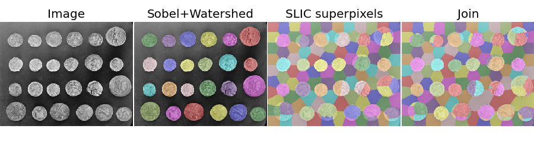

When segmenting an image, you may want to combine multiple alternative segmentations. The skimage.segmentation.join_segmentations function computes the join of two segmentations, in which a pixel is placed in the same segment if and only if it is in the same segment in _both_ segmentations.
import numpy as np
from scipy import ndimage as nd
import matplotlib.pyplot as plt
from skimage.filter import sobel
from skimage.segmentation import slic, join_segmentations
from skimage.morphology import watershed
from skimage.color import label2rgb
from skimage import data, img_as_float
coins = img_as_float(data.coins())
# make segmentation using edge-detection and watershed
edges = sobel(coins)
markers = np.zeros_like(coins)
foreground, background = 1, 2
markers[coins < 30.0 / 255] = background
markers[coins > 150.0 / 255] = foreground
ws = watershed(edges, markers)
seg1 = nd.label(ws == foreground)[0]
# make segmentation using SLIC superpixels
seg2 = slic(coins, n_segments=117, max_iter=160, sigma=1, compactness=0.75,
multichannel=False)
# combine the two
segj = join_segmentations(seg1, seg2)
# show the segmentations
fig, axes = plt.subplots(ncols=4, figsize=(9, 2.5))
axes[0].imshow(coins, cmap=plt.cm.gray, interpolation='nearest')
axes[0].set_title('Image')
color1 = label2rgb(seg1, image=coins, bg_label=0)
axes[1].imshow(color1, interpolation='nearest')
axes[1].set_title('Sobel+Watershed')
color2 = label2rgb(seg2, image=coins, image_alpha=0.5)
axes[2].imshow(color2, interpolation='nearest')
axes[2].set_title('SLIC superpixels')
color3 = label2rgb(segj, image=coins, image_alpha=0.5)
axes[3].imshow(color3, interpolation='nearest')
axes[3].set_title('Join')
for ax in axes:
ax.axis('off')
plt.subplots_adjust(hspace=0.01, wspace=0.01, top=1, bottom=0, left=0, right=1)
plt.show()
Python source code: download (generated using skimage 0.9.0)